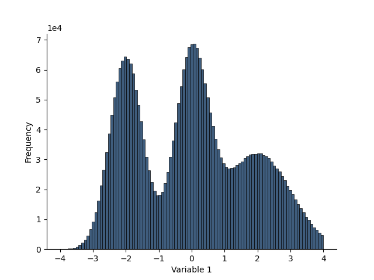
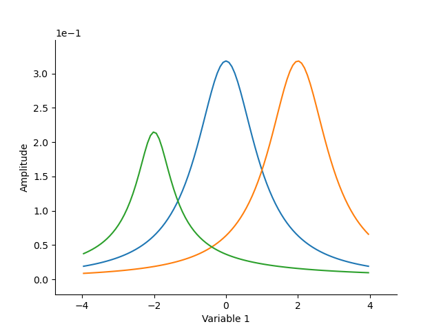
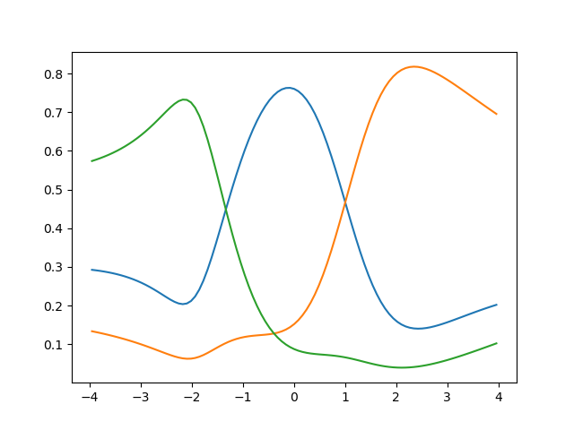

Note
Go to the end to download the full example code.
_summary_
from matplotlib import pyplot as plt
import numpy as np
from geobipy import mixNormal, mixStudentT, mixPearson, DataArray, RectilinearMesh1D, Histogram, get_prng
H = Histogram(RectilinearMesh1D(edges=DataArray(np.linspace(-4.0, 4.0, 100), 'Variable 1')))
Update the histogram counts
H.update(0.5*np.random.randn(1000000))
H.update(2 + (1.0*np.random.randn(1000000)))
H.update(-2 + (0.5*np.random.randn(1000000)))
plt.figure()
H.plot()
# mn = mixNormal(means=np.r_[0.0, 2.0, -2.0], sigmas=np.r_[1.0, 1.0, 0.5])
# plt.figure()
# mn.plot_components(x=H.mesh.centres, log=False)
# p = H.compute_probability(mn)
# plt.figure()
# plt.plot(H.mesh.centres, p.T)
mn = mixStudentT(means=np.r_[0.0, 2.0, -2.0], sigmas=np.r_[1.0, 1.0, 0.5])
plt.figure()
mn.plot_components(x=H.mesh.centres, log=False)
p = H.compute_probability(mn)
plt.figure()
plt.plot(H.mesh.centres, p.values.T)
# mn.fit_to_curve(H.mesh.centres, H.pdf.values, plot=True, debug=True, masking=0.5)
# print(mn)
# mn = mixPearson(means=np.r_[0.0, 2.0, -2.0], sigmas=np.r_[1.0, 1.0, 0.5], exponents=np.r_[2.0, 2.0, 2.0])
# plt.figure()
# mn.plot_components(x=H.mesh.centres, log=False)
# p = H.compute_probability(mn)
# plt.figure()
# plt.plot(H.mesh.centres, p.T)
plt.show()



Total running time of the script: (0 minutes 5.738 seconds)